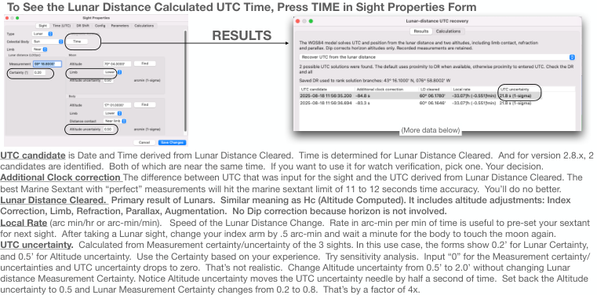

| Previous | Contents | Next |
Lunar distances · Page 45 of 66
Lunar Distance Use Case 1 “Sun-Moon” Aug 18, 2025 11:58
6. Input Lunar Sights into Celestial Navigation Plugin
 |
| Open illustration at full size |
To See the Lunar Distance Calculated UTC Time, Press TIME in Sight Properties Form
UTC candidate is Date and Time derived from Lunar Distance Cleared. Time is determined for Lunar Distance Cleared. And for version 2.8.x, 2 candidates are identified. Both of which are near the same time. If you want to use it for watch verification, pick one. Your decision. Additional Clock correction The difference between UTC that was input for the sight and the UTC derived from Lunar Distance Cleared. The best Marine Sextant with “perfect” measurements will hit the marine sextant limit of 11 to 12 seconds time accuracy. You’ll do no better. Lunar Distance Cleared. Primary result of Lunars. Similar meaning as Hc (Altitude Computed). It includes altitude adjustments: Index Correction, Limb, Refraction, Parallax, Augmentation. No Dip correction because horizon is not involved. Local Rate (arc min/hr or arc-min/min). Speed of the Lunar Distance Change. Rate in arc-min per min of time is useful to pre-set your sextant for next sight. After taking a Lunar sight, change your index arm by .5 arc-min and wait a minute for the body to touch the moon again. UTC uncertainty. Calculated from Measurement certainty/uncertainty of the 3 sights. In this use case, the forms show 0.2’ for Lunar Certainty, and 0.5’ for Altitude uncertainty. Use the Certainty based on your experience. Try sensitivity analysis. Input “0” for the Measurement certainty/ uncertainties and UTC uncertainty drops to zero. That’s not realistic. Change Altitude uncertainty from 0.5’ to 2.0’ without changing Lunar distance Measurement Certainty. Notice Altitude uncertainty moves the UTC uncertainty needle by half a second of time. Set back the Altitude uncertainty to 0.5 and Lunar Measurement Certainty changes from 0.2 to 0.8. That’s by a factor of 4x.
| Previous | Contents | Next |